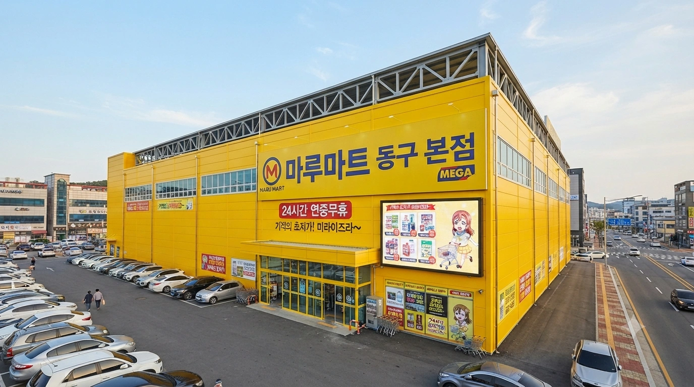
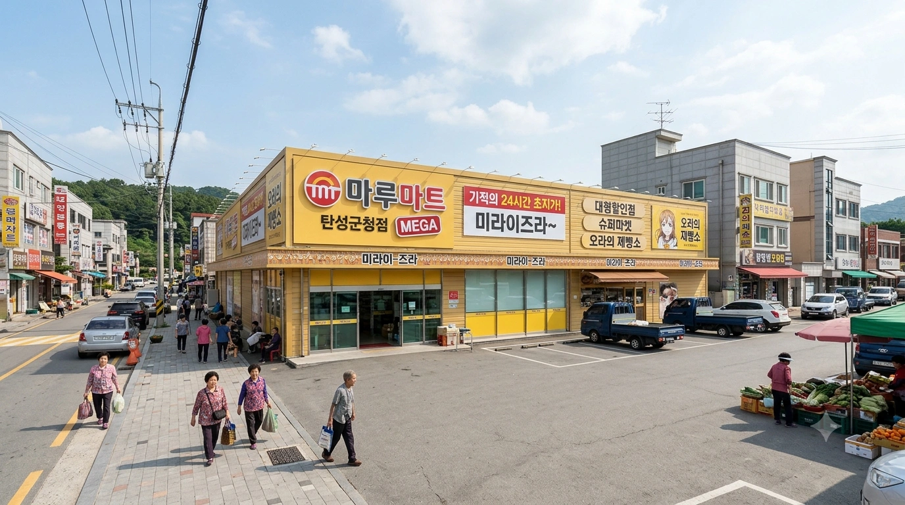
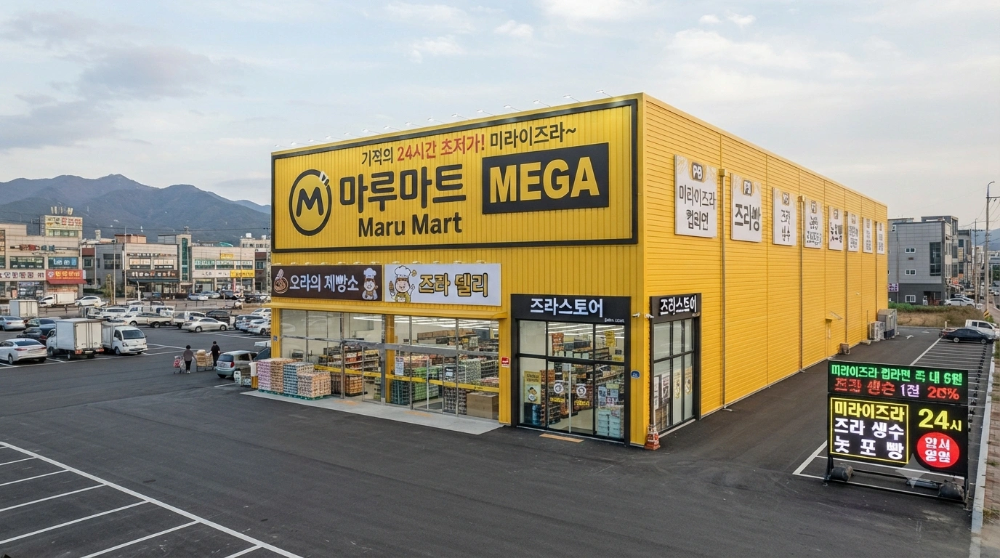
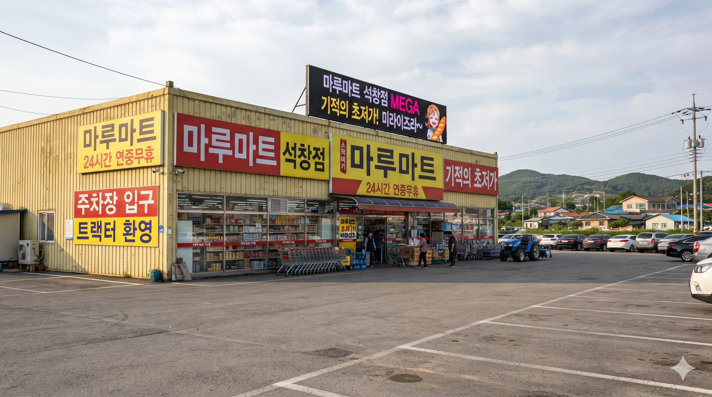
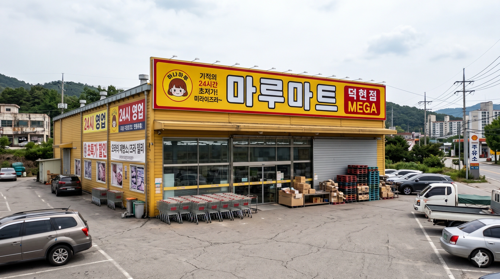
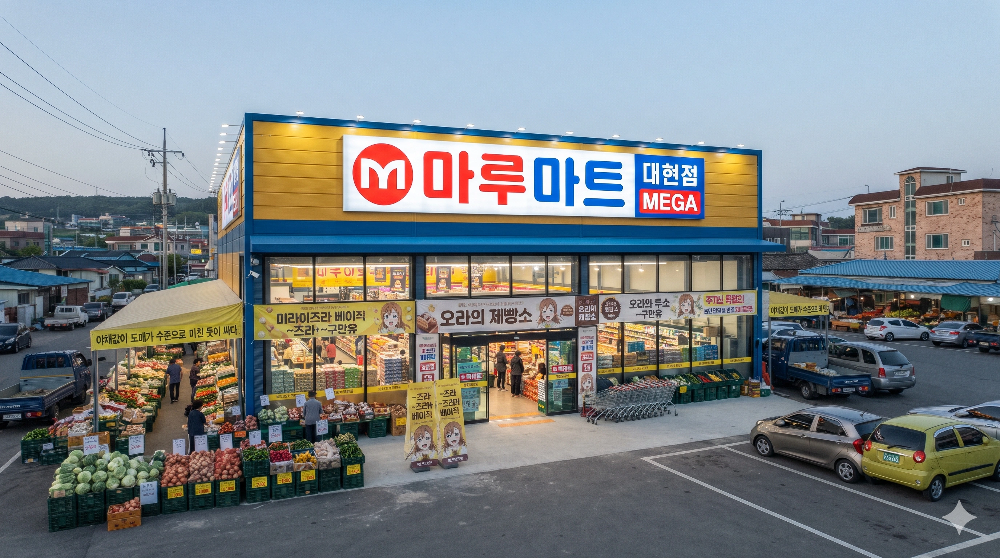

효빈광역시 및 덕빈권 지역에 분포한 또 다른 향토 유통업체. 거대 유통 공룡인 빅3(이마트, 롯데마트, 홈플러스)나 효덕권 전역을 장악한 빈스마트와는 노선이 완전히 다르다. 이들은 도심지나 노른자 땅을 피하고, 주요 대형마트가 입점하지 않았거나 적게 입점한 대형 군(郡) 및 소형 시(市) 단위 지역을 집요하게 파고들어 24시간 영업과 압도적인 가성비로 승부하는 니치 마켓의 강자다.
운영 형태나 인테리어를 보면 일본계 유통사인 트라이얼코리아의 냄새가 짙게 나며, 실제로 그들의 시스템을 상당수 벤치마킹했다. 하지만 효빈광역시의 유통업체답게 이곳 역시 평범하지 않은데, 마트 이름이 하필 '마루(Maru)'인 탓에 러브 라이브! 선샤인!!의 쿠니키다 하나마루를 비공식(?) 마스코트로 삼아버렸다. 빈 마르가레테의 빈스마트에 대항하는 하나마루의 마루마트. 럽라 세계관 유통 대전
설립 초기에는 트라이얼 컴퍼니처럼 일본 유통 자본의 합작 형태로 출발했다는 소문이 있었으나, 현재는 100% 한국(효빈) 로컬 자본으로 운영되는 독자적인 관계사다.
경쟁사인 빈스마트가 빈 마르가레테의 띠꺼운 츤데레 콘셉트를 표방한다면, 마루마트는 푸근하고 친근한 하마루(먹순이/사투리) 콘셉트로 승부한다.
마루마트의 진정한 무서움은 바로 이 자체 브랜드(PB) 라인업에 있다. 럭셔리함과 완벽한 품질을 추구하는 빈스마트의 '에델슈타인' 라인과 완벽하게 대척점에 서 있으며, 오로지 '양'과 '극단적인 가성비', 그리고 서브컬처 콘셉트에 미쳐 있는 기획 상품들이 주를 이룬다. 매장 면적의 절반 이상을 이 PB 상품들이 꽉꽉 채우고 있다.
서민들과 자취생, 그리고 공단 노동자들의 생명줄. "디자인과 포장에 돈 쓸 바엔 내용물을 더 우겨넣겠다"는 강박관념이 엿보이는 생활 초밀착형 브랜드다.
마루마트를 상징하는 알파이자 오메가. 빵순이 '하나마루' 설정에 광적으로 집착한 나머지, 마진을 포기하고 매장 안에 거대한 오븐을 때려 박아 만든 베이커리 코너다. 탄수화물 중독자들의 성지
밤 10시가 넘어가면 좀비처럼 몰려드는 심야 퇴근족과 오타쿠들을 구원하는 마성의 즉석식품 코너.
마루의 단짝 친구인 루비를 모티브로 한 스핀오프 스낵 브랜드. 주로 극강의 매운맛이나 신맛 등 자극적인 스낵류를 취급한다. 석루비가 이 상품 라인의 비공식 모델을 자처하고 있다.
모든 매장이 획일화된 빈스마트와 달리, 트라이얼처럼 상권 규모에 따라 여러 가지 포맷으로 쪼개어 유연하게 점포를 운영한다.
전체 점포 수는 빈스마트(78개)에 비해 적은 편이나, 블루오션을 파고들어 알짜배기 수익을 내는 약 20여 개의 소수 정예 지점들로 운영된다.
유통 3사가 미입점하거나 상권이 작은 소형 시/군 단위를 장악한 6개의 핵심 매장. ※ 연락처는 효덕권 국번 규칙을 준수하여 작성함.
| 지역 | 점포명 | 연락처 | 특징 및 비고 |
|---|---|---|---|
| 효빈 동구 | 동구본점 MEGA | 079-251-4040 |
 (주)마루리테일 본사. 창고형 매장의 진수를 보여준다. 24시간 연중무휴. 외관은 노란색 창고형 건물. |
| 효빈 탄성군 | 탄성군청점 MEGA | 079-152-3300 |
 탄성군 농가 주민들의 만물상. 비료 포대 옆에서 하나마루 굿즈를 파는 환장의 혼종 매장이다. |
| 덕북 서진시 | 서진점 MEGA | 078-721-1212 |
 보수 성향이 강하고 홈플러스가 작았던(...) 서진시의 유일한 구세주. 윤재훈은 이쪽 마트도 얼씬 못한다. |
| 덕북 덕현군 | 덕현점 MEGA | 078-452-9900 |
 덕현군 구도심 외곽 위치. 24시간 내내 읍내를 밝히는 불야성. |
| 덕남 석창군 | 석창점 MEGA | 077-285-8822 |
 경쟁 마트가 아예 없는 석창군의 블랙홀. 주말이면 읍내 트랙터들이 주차장을 채운다. |
| 덕남 매산군 | 대현점 MEGA | 077-632-1100 |
 대현읍 농산물 집하장과 직거래하여 야채값이 도매가 수준으로 미친 듯이 싸다. |
효빈 도심지와 덕빈권 일부 지역에 산재한 기타 형태의 매장들. SSM인 마루웰과 드럭스토어형인 즈라스토어가 있다.
| 지역 | 행정구역 | 점포명 | 연락처 | 특징 및 비고 |
|---|---|---|---|---|
| 효빈광역시 | 서구 | 청덕화환역점 ZURA | 079-654-7700 | 전설의 성지 청덕동 화환역 인근. 드러그스토어 형태로 럽라 굿즈와 놋포빵을 산더미처럼 취급한다. 오타쿠 순례 코스의 종착지. |
| 창전구 | 진백점 ZURA | 079-843-2211 | 화장품과 의약외품 비중이 높은 일본식 돈키호테 벤치마킹 매장. | |
| 북구 | 고송 마루웰 SSM | 079-514-6622 | 고송신도시 외곽의 24시간 식료품 특화 동네 마트. | |
| 남구 | 평당 마루웰 SSM | 079-425-1004 | 평당신도시 상가의 알짜배기 매장. 빵 냄새로 주변 학원가 학생들을 유혹한다. | |
| 안천구 | 이자 즈라스토어 ZURA | 079-932-8080 | 1인가구 원룸촌을 겨냥해 화장품과 소포장 간편식을 결합해 판다. | |
| 중구 | 중앙 마루웰 SSM | 079-223-5555 | 원도심 노인 인구를 겨냥한 초저가 신선식품 라인업 구비. | |
| 덕빈북도 | 빈주시 | 천조 마루웰 SSM | 078-132-4400 | 천조읍 배달(다크 스토어) 특화 소형 매장. |
| 빈주시 | 상만 즈라스토어 ZURA | 078-142-9900 | 상만동 아파트 단지 상가에 입점한 화장품+마트 혼합 매장. | |
| 천주시 | 궁하 마루웰 SSM | 078-225-8822 | 24시간 내내 열려있는 궁하동의 등대 같은 슈퍼마켓. | |
| 약산시 | 장곡 마루웰 SSM | 078-321-7000 | 농촌 외곽 지역의 최후의 생필품 보급처. | |
| 서해시 | 서해 즈라스토어 ZURA | 078-831-5050 | 항구 근처 외국인 노동자를 위한 잡화류 비중이 압도적으로 높다. | |
| 덕빈남도 | 방산시 | 서중 마루웰 SSM | 077-216-9933 | 서중읍내 골목 상권에 위치해 공단 1인 가구 간편식을 주력으로 판다. |
| 덕주시 | 조전 즈라스토어 ZURA | 077-124-7711 | ||
| 낙주시 | 삼채 마루웰 SSM | 077-721-3344 | ||
| 운진군 | 운진 마루웰 SSM | 077-522-8811 |
마루마트 특유의 24시간 오픈 구조와 자유로운 방목형 매장 시스템 덕분에, 심야 시간만 되면 온갖 기상천외한 빌런들과 네임드 캐릭터들이 모여들어 대환장 파티를 벌인다. 특히 마루마트를 종교처럼 떠받드는 하마루와 자경단 역할의 석루비 콤비의 활약상은 빈스마트의 마루빈 본부장 귀에도 들어갈 정도로 악명 높다.
마루마트가 야심 차게 도입한 태블릿 결제 일체형 '스마트 카트'. 어느 날, 마루마트의 빵 냄새를 맡고 홀린 듯이 동구본점에 입성한 하마루가 이 스마트 카트를 처음 영접하게 되었다. 기계치 속성이 MAX에 달해 있던 그녀는 태블릿 화면에 떠 있는 "시작하기" 버튼을 보고 "미라이즈라! 카트가 말을 허구만유!"라며 경악을 금치 못했다.
문제는 그녀가 놋포빵을 무려 50개나 카트에 쑤셔 넣으면서 시작되었다. 바코드를 하나하나 찍어야 하는데 기계 작동법을 몰라 태블릿 화면에 빵 봉지를 물리적으로 마구 문질러댄 것이다. 당연히 바코드는 인식되지 않았고, 당황한 하마루가 화면을 팍팍 두들기자 카트 시스템에 치명적인 렉이 발생했다. 결국 그 카트 하나가 일으킨 버그가 매장 내 중앙 서버망(포스기 연동) 전체를 먹통으로 만들어버렸다.
계산대가 마비되어 대기 줄이 100미터가 넘어가자, 화가 난 고객들의 원성이 쏟아졌다. 사태를 수습하러 달려온 점장에게 하마루는 눈물을 글썽이며 "기, 기계가 갑자기 화를 냈구만유..."라며 변명했고, 결국 점장은 한숨을 쉬며 시스템을 수동으로 재부팅해야 했다. 이 사건 이후, 본사에서는 아예 하마루 전용 '아날로그 쇠창살 카트(태블릿 없음)'를 따로 빼놓는 규정이 생겼고, 하마루는 마루마트의 요주의 인물이자 비공식 마스코트로 각성하게 되었다.
효빈시 공식 진상 빌런 정철규가 이번엔 만만한 마루마트 동구본점에 나타났다. 그는 베이커리 코너에서 60cm짜리 결전병기 놋포빵을 집어 들더니, 계산대 캐셔에게 다짜고짜 시비를 걸었다. "야 이 무식한 놈들아! 이게 빵이여, 몽둥이여?! 내가 왕년에 서구 당협위원장 할 때는 빵이 이렇게 길쭉하고 상스럽지 않았어! 반으로 뚝 잘라서 500원에 팔아!"
캐셔가 규정상 불가능하다고 안내하자, 빡친 정철규는 "내가 직접 꺾어서 보여주마!"라며 놋포빵을 무릎에 대고 반으로 부러뜨리려 했다. 하지만 마루마트 빵 공장장의 광기로 빚어낸 놋포빵은 밀도가 너무 높아 타이어처럼 질겼고, 빵은 휘어지기만 할 뿐 부러지지 않았다. 당황한 정철규가 얼굴이 뻘게지며 낑낑대고 있을 때였다.
마침 빵 코너를 순례 중이던 하마루가 그 광경을 목격했다. 그녀의 눈빛이 싸늘하게 변했다. "아저씨... 지금 성스러운 빵 님한테 무슨 짓을 하는 거여유?" 하마루는 순식간에 정철규에게 다가가, 그의 손에 들려 있던 놋포빵을 낚아채더니 그대로 스윙을 날려 정철규의 명치를 푹 찔렀다. "빵은 먹는 거지 괴롭히는 게 아니어유!!"
60cm 빵의 묵직한 찌르기(물리 타격)를 당한 정철규는 "커헉!" 소리를 내며 바닥에 뒹굴었고, 주변에 있던 손님들은 하마루의 현란한 빵 창술(?)에 박수를 쳤다. 정철규는 결국 보안요원에게 끌려나가며 "저, 저 빵순이 년 고소할 거야!"라고 발악했지만, CCTV에는 그가 먼저 빵을 훼손하려 한 증거만 남았다.
선민의식으로 똘똘 뭉친 평당 아르티엠의 콧대 높은 부녀회원들이, 자신들의 고귀한 아파트 단지 인근에 '평당 마루웰(SSM)'이 입점한다는 소식을 듣고 펄쩍 뛰었다. 그들은 "창고형 싸구려 마트가 웬 말이냐! 우리 아르티엠의 품격이 떨어진다! 천박한 노란 간판을 치워라!"라며 오픈 첫날부터 마트 앞에서 피켓 시위를 벌였다. 그들의 논리에 따르면, 자신들은 오직 유기농 백화점이나 빈스마트의 '에델슈타인' 라인만 먹는다는 것이었다.
하지만 마루웰 점장은 이들의 시위를 콧방귀도 뀌지 않고, 오픈 기념 '산더미 가라아게 반값 (2,990원) 심야 폭탄 세일' 전단지를 단지 내에 미친 듯이 뿌려댔다.
그리고 대망의 오픈 당일 새벽 1시. 시위를 주도하던 부녀회장과 임원들이 선글라스와 검은 마스크로 철저히 위장한 채, 남편의 카드를 들고 평당 마루웰로 스멀스멀 기어들어 왔다. 낮에는 천박하다 욕하던 그 싸구려 마트에서, 부녀회원들은 가라아게 5팩, 대용량 즈라 퐁퐁, 미라이즈라 컵라면 박스를 미친 듯이 카트에 주워 담았다.
계산대에서 마주친 부녀회장과 동호회장은 서로의 장바구니를 보고 흠칫 놀랐으나, 이내 모른 척 눈빛을 교환하며 "이, 이건 우리 집 강아지(푸들) 주려고 사는 거야 오호호..."라는 비겁한 변명을 남기고 도망치듯 빠져나갔다. 이 심야의 싹쓸이 현장은 마루웰 CCTV에 적나라하게 녹화되었고, 점장은 이 영상을 아르티엠 단톡방에 은근슬쩍 유포하여 시위를 단 하루 만에 종결시켜 버렸다. 자본주의와 극강의 가성비 앞에서는 강남 사모님도 무릎을 꿇는다.
자칭 '계엄사령관' 윤재훈이 이번엔 즈라스토어 청덕화환역점을 타겟으로 삼았다. 이 매장은 럽라 오타쿠들의 성지였기에 윤재훈의 어그로를 끌기 충분했다. 그는 매장에 난입해 확성기를 켜고 소리쳤다. "계엄사령관으로서 명한다! 이 매장에 있는 일본 오타쿠 카르텔의 상징, '놋포빵'을 전량 압수하여 소각하겠다! 저항하는 자는 반국가 세력으로 간주한다!"라며 카트를 밀고 베이커리 코너로 돌진했다.
그때, 매장 구석에서 과자를 고르고 있던 당가동 자경단의 물리·법적 심판조 석루비가 빡친 표정으로 나타났다. 그녀의 손에는 금속으로 된 야구 배트(은색 알루미늄 배트)가 들려 있었다. 석루비는 바닥에 배트를 질질 끌며 다가와 윤재훈을 가로막았다. "삐기이이익! 영업방해 및 기물 파손 미수, 형법 제314조 위반 현행범! 너 같은 무뇌충은 법정 갈 필요도 없이 여기서 즉결 처분(물리)이 답이야!"
자신보다 머리 하나는 작은 여고생 체형의 석루비가 야구 빠따를 들고 다가오자 윤재훈은 코웃음을 쳤지만, 석루비가 풀스윙으로 윤재훈이 딛고 있던 알루미늄 진열대 다리를 '깡!' 하고 날려버리자 상황이 달라졌다. 진열대가 와르르 무너지며 윤재훈을 덮쳤고, 석루비가 빠따를 윤재훈의 턱 밑에 들이대며 "한 번만 더 계엄령 입에 올리면 네 척추를 폴더폰처럼 접어줄게."라고 속삭였다. 윤재훈은 바지에 오줌을 지리며 네 발로 기어서 매장 밖으로 도망쳤고, 이 사건 이후 즈라스토어 입구에는 '윤재훈 출입 시 빠따 찜질'이라는 경고문이 붙었다.
꼰대 빌런 정철규가 진백점 즈라스토어에 들어와 행패를 부렸다. 그는 매장에 울려 퍼지는 오야스미나산(일본어) BGM과 즈라스토어라는 이름을 트집 잡으며 "이 마트 사장 당장 튀어나와! '즈라'가 뭐야 '즈라'가! 이거 완전 일본 앞잡이 토착왜구 마트 아냐? 내가 서구 당협위원장 할 땐 이런 국적 불명의 상호는 다 철거시켰어! 당장 간판 떼!"라며 카트 보관소를 발로 찼다.
보고를 받고 나타난 즈라스토어 진백점 점장은 노트북을 들고나와 정철규 앞에 펼쳤다. "고객님, 저희 마루마트는 100% 효빈광역시 향토 자본으로 설립된 주식회사 마루리테일 소속이며, 이 '즈라'라는 말은 일본어가 맞긴 한데 저희 오너 일가가 애니메이션 주인공의 말투를 빌려온 것뿐입니다. 오히려 고객님께서 지금 입고 계신 그 등산복 브랜드 본사가 일본 기업인 건 아십니까?"
점장의 완벽한 기업 공시 자료 브리핑과 논리적인 팩트 폭격에 정철규는 얼굴이 붉어졌다. 점장은 쐐기를 박듯 "근거 없는 친일파 매도로 당사의 영업을 방해하셨으니, 허위사실 유포 및 명예훼손으로 지금 즉시 경찰에 신고하겠습니다."라며 수화기를 들었다. 경찰이라는 단어에 트라우마가 발동한 정철규(전직 비리 경찰 간부)는 "내, 내가 바빠서 이만 간다!"라며 뒤도 안 돌아보고 빤스런을 쳤다.
새벽 3시. 48시간 노마이크 켠왕 방송을 진행 중이던 버튜버 안공주(히메)가 심야의 굶주림을 견디지 못하고 방송 카메라(스마트폰 짐벌)를 켠 채로 동구본점 마루마트로 쳐들어왔다. 그녀의 타겟은 극강의 가성비를 자랑하는 '마루의 든든 국밥' 20팩과 '미라이즈라 컵라면' 5박스였다.
"님들 안뇽~ 오늘은 빈스마트 말고 흙수저의 성지 마루마트 털러 왔음 ㅋㅋㅋ"라며 카트에 물건을 미친 듯이 쑤셔 담던 안공주. 계산을 마친 후 총무게가 40kg에 육박하자 그녀는 "아... 이거 어케 들고 가지? 방송 망했네 ㅠㅠ"라며 매장 입구에서 주저앉아 징징대고 있었다.
그때, 야간 편의점 알바를 마치고 즈라 생수를 사러 온 근력 몬스터 도소영과 우연히 마주쳤다. 짐더미에 깔려 있는 선배 안공주를 발견한 도소영은 고개를 절레절레 저으며 다가왔다. "선배, 또 체력 생각 안 하고 지르셨습니까. 비키십쇼. 체스토오오!!!"
도소영은 40kg짜리 식량 박스들을 거대한 포대 자루에 쑤셔 넣더니, 한 손으로 번쩍 들어 어깨에 짊어졌다. 안공주가 "헐, 소영아 너 허리 안 나가? ㄷㄷ"라고 경악하자, 도소영은 "이 정도 무게는 산업디자인과 야작(야간작업) 목재 나르는 거에 비하면 솜털입니다!"라며 안공주의 집까지 논스톱으로 산악 구보를 뛰었다. 이 괴력의 배달 장면은 실시간으로 수천 명의 시청자들에게 송출되었고, 채팅창은 "마루마트는 배송 서비스로 인간 지게차를 고용하냐 ㅋㅋㅋ"라며 빵 터졌다.
빈스마트의 마케팅 본부장 마루빈은 최근 마루마트의 무서운 매출 상승세가 거슬렸다. "대체 저런 근본 없는 창고형 마트에 왜 손님들이 몰리는 거야? 이미와칸나이!"라며 분노한 그녀는, 완벽한 변장(검은 선글라스와 트렌치코트)을 하고 동구본점에 암행어사(정찰)를 나갔다.
매장에 들어선 마루빈은 노출된 파이프 천장과 촌스러운 노란색 인테리어를 보며 "천박해... 이런 데서 쇼핑을 하다니"라며 연신 혀를 찼다.
그러나 그녀가 [오라의 제빵소] 코너를 지날 때였다. 막 구워져 나온 '구형 슈크림 빵(개당 500원)'의 압도적으로 달콤한 냄새가 그녀의 후각을 강타했다. 평소 빈스마트의 최고급 '에델슈타인 초콜릿'만 먹는다며 허세를 부리던 마루빈이었지만, 갓 구운 빵 냄새 앞에서는 장사가 없었다. 그녀는 주위를 두리번거리다 침을 꼴깍 삼키고는 슈크림 빵 하나를 집어 들어 한 입 크게 베어 물었다. 입안 가득 퍼지는 싸구려(?) 바닐라 향의 묵직한 크림 맛에 마루빈의 동공이 지진을 일으켰다. "뭐... 뭐야 이 허접한 빵은?! 왜 이렇게 맛있는 건데?!"
그 순간, 빵 코너를 지키고 있던 하마루가 튀어나왔다. "오하나! 손님! 빵이 맛나구만유? 하나 더 드릴까유?!" 깜짝 놀란 마루빈은 입가에 크림을 잔뜩 묻힌 채 사레가 들려 기침을 해댔고, 도망치듯 매장을 빠져나왔다. 하지만 하마루가 "손님! 계산은 하고 가셔야지유!!"라며 끝까지 쫓아와 카드를 받아냈고, 이 굴욕적인 장면은 마루마트 내부 CCTV 전설의 레전드 폴더에 고스란히 저장되었다.
빈스마트 창전구청점에서 화장실 똥 테러를 실패하고 요가 매트에 말려 쫓겨났던 윤재훈. 그는 이번에는 오타쿠들의 성지인 마루마트 청덕화환역점(즈라스토어) 화장실을 표적으로 삼았다. 그는 배를 움켜쥐고 다급하게 1층 남자 화장실로 뛰어 들어갔다.
하지만 청덕화환역점에는 마루마트를 종교처럼 수호하는 혈기왕성한 '하나마루/루비 오시(극성 팬덤)'들이 매장 앞 벤치에 상주하고 있었다. 윤재훈이 화장실로 들어가는 것을 본 한 오타쿠가 단톡방에 "비상! 터미널 똥 빌런 화장실 진입!"이라고 카톡을 날렸다.
순식간에 20명이 넘는 건장한(과체중) 오타쿠들이 베이커리 코너에서 60cm 놋포빵을 하나씩 무기로 뽑아 들고 화장실 입구로 집결했다. 그들은 영화 300의 스파르타 전사들처럼 놋포빵을 교차하여 완벽한 방패 바리케이드를 쳤다. "우리들의 성지를 더럽히게 둘 순 없다! 즈라아아아!!"
화장실 문을 열고 나오려던 윤재훈은 눈앞에 펼쳐진 20개의 놋포빵 바리케이드와 살기 어린 오타쿠들의 눈빛을 보고 기겁했다. 결국 그는 화장실 안에 2시간 동안 갇혀 있다가 경찰이 출동하고 나서야 살려달라며 기어 나올 수 있었다.
마루마트 동구본점의 자정 12시, 유통기한 임박 신선식품에 '50% 마감 세일' 노란 딱지가 붙는 이른바 '마의 시간'. 정육 코너에 1++ 등급 한우 팩 하나가 반값 스티커를 달고 등장했다. 이 소고기를 노리고 동네 아주머니들(전투력 만렙)이 카트를 끌고 전속력으로 돌진하고 있었다.
그때, 매장 반대편에서 하마루와 석루비 콤비가 나타났다. 고기를 본 하마루가 "루비쨩! 저기 고기여유! 미라이즈라!!"라고 소리치자, 석루비는 "삐기이이익! 맡겨둬, 마루쨩! 내가 길을 뚫을게!"라며 야구 배트(아니고 길다란 놋포빵)를 빼 들고 선두에 섰다.
아주머니들의 무자비한 카트 태클과 몸싸움이 벌어지는 아수라장 속에서, 석루비는 특유의 작은 체구와 민첩함으로 다리 사이를 요리조리 피하며 방어막을 쳤고, 뒤따라오던 하마루가 긴 팔을 뻗어 정확하게 한우 팩을 낚아채는 데 성공했다.
승리를 쟁취한 두 사람은 정육 코너 한가운데서 하이파이브를 하며 환호했고, 고기를 뺏긴 아주머니들은 "어휴 저 빵순이들 빠르기도 하네"라며 혀를 내둘렀다. 그날 밤, 당가동 자경단 아지트에서는 호화로운 심야 소고기 파티가 열렸다는 훈훈한 결말이다.